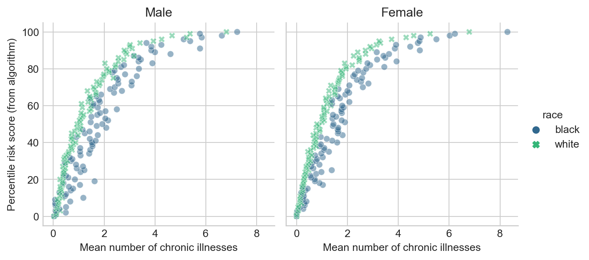
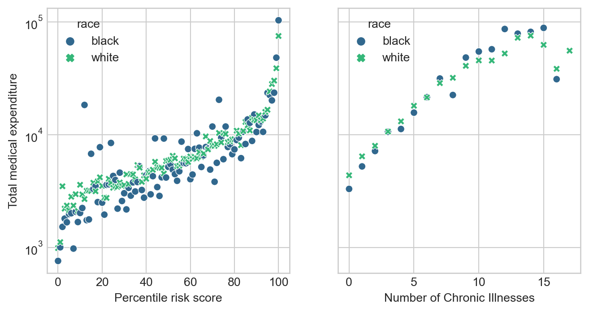

import pandas as pd
url = "https://gitlab.com/labsysmed/dissecting-bias/-/raw/master/data/data_new.csv?inline=false"
df = pd.read_csv(url)Replication Study: Dissecting racial bias in an algorithm used to manage the health of populations
2024-03-08
The expectations for all blog posts apply!
This blog post is a replication study. In this post, you will read a famous scholarly paper on racial bias in a healthcare recommender system; replicate its primary findings; and discuss your results.
Preparation
To prepare to complete this blog post, you need to do three things:
First, read this journal article
Obermeyer, Ziad, Brian Powers, Christine Vogeli, and Sendhil Mullainathan. 2019. “Dissecting Racial Bias in an Algorithm Used to Manage the Health of Populations.” Science 366 (6464): 447–53.
Second, watch the concise high-level discussion of this paper in the video “Are We Automating Racism?”.
I recommend the entire video, but the discussion of this paper runs from approximately 14:45 to 17:51. The discussion features Dr. Ruha Benjamin, a prominent critical scholar of technology and society. She is the author of the well-known book Race After Technology, as well as several others.
Third, reread the article in the context of Dr. Benjamin’s discussion.
Now, proceed on to the next parts.
Part A: Data Access
In order to protect patient privacy, the authors did not share the “real” data used in their study. Instead, they created a randomized version of the data that preserves many of the same patterns and trends. You can use the code below to access the data.
Poke around the data a bit. You should consult the code repository provided by the authors, especially the data dictionary, in order to interpret the meaning of the rows and columns.
A few of the columns are especially important:
risk_score_tis the algorithm’s risk score assigned to a given patient.cost_tis the patient’s medical costs in the study period.raceis the patient’s self-reported race. The authors filtered the data to include onlywhiteandblackpatients.gagne_sum_tis the total number of chronic illnesses presented by the patient during the study period.
Part B: Reproduce Fig. 1
Please make a plot in which you reproduce Fig. 1A of Obermeyer et al. (2019). Your figure is not required to be exactly the same, but it must visualize risk score percentiles against mean number of active chronic conditions within that percentile. For example, I thought I would try spliting out male and female patients. I also think the figure looks a bit nicer with axes inverted. So, my result looked like this:

Please make sure to appropriately label all axes, legends, and plot facets.
Include a brief discussion of the meaning of this plot. Suppose that Patient A is Black, that Patient B is White, and that both Patient A and Patient B have exactly the same chronic illnesses. Are Patient A and Patient B equally likely to be referred to the high-risk care management program?
Part C: Reproduce Fig. 3
The authors write that
…there are many opportunities for a wedge to creep in between needing health care and receiving health care—and crucially, we find that wedge to be correlated with race…
To support their argument, they produce Figure 3. This figure shows how total medical expenditures are correlated with the risk score and with the number of chronic health conditions. Please produce a version of Figure 3, including both panels. For the horizontal axis in the second panel, please use the number of chronic conditions. It is not necessary to draw threshold values in the same way as the authors. Here’s an example output.
Note: Although not explicitly labeled, I believe that the righthand panel of Fig. 3 in Obermeyer et al. (2019) has percentiles in the number of chronic conditions on the horizontal axis. I’m uncertain how they computed these, considering that in our sample data set the maximum number of chronic conditions is 17. This implies that either the original data set has patients with more chronic conditions or the authors did something to arbitrarily break ties. To avoid dealing with this, let’s just use the number of chronic conditions.

plt.subplots to create a figure with two panels, and then sns.scatterplot to populate each of the panels.Comment on your findings. You may find it useful to note that the vast majority of patients in this data set have 5 or fewer chronic conditions, as you will confirm in Part D.
Part D: Modeling Cost Disparity
You’ll notice that there is a relatively stable pattern of disparity in the cost incurred by Black and white patients with 5 or fewer chronic conditions, but that this pattern begins to swing wildly in one direction or another as the number of active chronic conditions increases. This is likely a reflection of the smaller number of data points as the number of conditions increases, which exacerbates the wild variability of healthcare costs.
Let’s see if we can quantify the disparity that we observe in patients that have 5 or fewer active chronic conditions.
Data Prep
- First, determine the percentage of the patients in the data with 5 or fewer chronic conditions. Does this percentage justify the choice to focus on these patients?
- Create a new column of the data set which is just the logarithm of the cost. This is called a log-transform. We’ll use this as our target variable. Log transforms are common when the target variable varies widely across several orders of magnitude. Because \(\log(0)\) is undefined, you should subset the data so that patients who incurred $0 in medical costs are removed.
- Create a dummy (one-hot encoded) column for the qualitative race variable. Make sure to track what a
0and a1mean in this column. - Separate the data into predictor variables
Xand target variabley(the log-cost). For predictor variables, just use the dummy columns for race and the number of active chronic conditions.
Modeling
Your figure from the previous part suggests that the relationship between the number of chronic conditions and the cost might be nonlinear. For this reason, we are going to fit a regression model with polynomial features derived from the number of active chronic conditions. How many polynomial features should we use? A simple way to figure this out is cross-validation. Here’s a function that will construct data sets with polynomial features of various sizes:
def add_polynomial_features(X, degree):
X_ = X.copy()
for j in range(1, degree):
X_[f"poly_{j}"] = X_["gagne_sum_t"]**j
return X_Use this function to loop through polynomial features of varying degrees. For each possible degree, construct a LinearRegression model and compute its score on the expanded data using cross-validation. From your results, determine a reasonable value of the polynomial degree that appears to led to the best predictions on this data set. There may be several reasonable choices.
Once you have determined a degree that seems reasonable for this data set, construct a copy of the data with the correct number of polynomial features and fit one last linear regression model.
You can access the coefficients of the linear regression model as LR.coef_. Determine which of these coefficients corresponds to Black race (the coefficients are in the same order as the variables in the data frame). Let \(w_{\mathrm{b}}\) be the name of this coefficient. When working with log-transformed data, the number \(e^{w_\mathrm{b}}\) is our estimate of the healthcare costs incurred by Black patients as a percentage of the costs incurred by white patients.
What is your estimate of the disparity in cost? Does it roughly support the findings of Obermeyer et al. (2019)?
Part E: Abstract and Discussion
Please add an introductory “abstract” section to your blog post describing the high-level aims of of your analysis and an overview of your findings. The abstract should be no more than one paragraph. Then, add a closing “discussion” section of your blog post in which you summarize your findings and describe what you learned from the process of completing this post.
© Phil Chodrow, 2024
References
Obermeyer, Ziad, Brian Powers, Christine Vogeli, and Sendhil Mullainathan. 2019. “Dissecting Racial Bias in an Algorithm Used to Manage the Health of Populations.” Science 366 (6464): 447–53. https://doi.org/10.1126/science.aax2342.